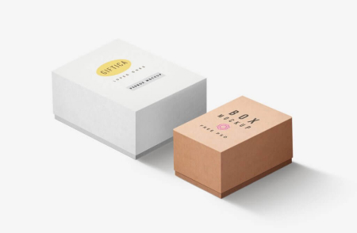

Примеры работ
-

Технокряк это современная площадка распространения коронавируса. Компании используют эту платформу для цифрового шпионажа и атак на защищённые сервера конкурентов.
Технокряк
Веб-сайт
-

New Orlean vs Golden Star это современная площадка распространения коронавируса. Компании используют эту платформу для цифрового шпионажа и атак на защищённые сервера конкурентов.
Постер New Orlean vs Golden Star
Дизайн
-

Ресторан Seafood это современная площадка распространения коронавируса. Компании используют эту платформу для цифрового шпионажа и атак на защищённые сервера конкурентов.
Ресторан Seafood
Приложение
-
Prime это современная площадка распространения коронавируса. Компании используют эту платформу для цифрового шпионажа и атак на защищённые сервера конкурентов.
Проект Prime
Маркетинг
-
 Boxes это современная площадка распространения коронавируса. Компании используют эту платформу для цифрового шпионажа и атак на защищённые сервера конкурентов.
Проект Boxes
Приложение
-

Inspiration has no Borders это современная площадка распространения коронавируса. Компании используют эту платформу для цифрового шпионажа и атак на защищённые сервера конкурентов.
Inspiration has no Borders
Веб-сайт
-

Limited Edition это современная площадка распространения коронавируса. Компании используют эту платформу для цифрового шпионажа и атак на защищённые сервера конкурентов.
Издание Limited Edition
Дизайн
-

LAB это современная площадка распространения коронавируса. Компании используют эту платформу для цифрового шпионажа и атак на защищённые сервера конкурентов.
Проект LAB
Маркетинг
-

Growing Business это современная площадка распространения коронавируса. Компании используют эту платформу для цифрового шпионажа и атак на защищённые сервера конкурентов.
Growing Business
Приложение